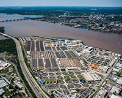

Monday, 28 March – Optional/Side Event Day
Side events are free and open to all attendees, but space is very limited. You are encouraged to sign up for these events when you register for the Forum. When the side events reach capacity, a waiting list for each event will be available.
BenMAP Training
Users will learn: (1) the basic principles of air pollution benefits assessment, including how to use information from air pollution epidemiology studies to construct health impact functions and how to interpret results correctly; (2) using the built-in health impact functions, demographic, health and air quality data from the Global Burden of Disease project to perform country-level analyses of air pollution health impacts and characterize the results; (3) using the core features of the BenMAP-CE program including the Geographic Information System, how to select health impact functions from the library and how to report both tabular results and maps.
For more information about BenMAP please visit the EPA BenMAP website at: http://www.epa.gov/benmap
Site Tour of the Blue Plains Wastewater Treatment Plant
The Blue Plains Advanced Wastewater Treatment Plant, operated by DC Water, is the largest plant in the world. The plant provides wastewater collection and treatment services to more than two million Washington metro area customers, and has the capacity to treat 384 million gallons of sewage a day. Using biosolids separated from the wastewater treatment process, the Blue Plains plant utilizes four 3.8 million gallon anaerobic digesters to produce 1.2 million cubic feet of biogas per day. The plant uses the biogas to fuel a combined heat and power system to produce 13 MW of electricity, enough to power one-third of Blue Plains's operations, and steam for the plant's thermal needs. The Blue Plains plant is also the first plant in North America to use thermal hydrolysis to "cook" the biosolids prior to their treatment in the anaerobic digesters (a process which facilitates biogas production in the digesters). The clean energy generated using the plant's biosolids is expected to reduce the plant's carbon footprint by 33 percent.
For more information about Blue Plains wastewater treatment plant please visit their website at: https://www.dcwater.com/about/tours.cfm
World Bank Pilot Auction Facility Overview
The Pilot Auction Facility for Methane and Climate Change Mitigation (PAF) is an innovative climate finance mechanism developed by the World Bank. The PAF auctions price guarantees for greenhouse gas emission reductions, thus maximizing the use of public funds while leveraging private sector financing. Winners in the second auction of the PAF—scheduled for the first half of 2016—will take home price guarantees for methane reductions in the waste, wastewater, and agricultural waste sectors. Designed for potential bidders such as project owners, aggregators, and technology providers, this side event will provide an introduction to the PAF as well as information on how to participate in the second auction. Additionally, the side-event will discuss the replication and scale-up of the PAF approach to support other methane reducing sectors such as gas pipeline distribution and coal mine methane.